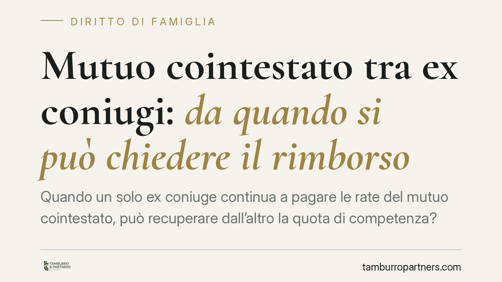

Mutuo cointestato tra ex coniugi: da quando si può chiedere il rimborso
Quando un solo ex coniuge continua a pagare le rate del mutuo cointestato, può recuperare dall'altro la quota di competenza? Una recente pronuncia del Tribunale di Caltanissetta individua nel provvedimento di separazione lo spartiacque per il diritto al rimborso. Il tema, però, è meno lineare di quanto sembri e dipende dal regime patrimoniale e dalla prova dei pagamenti.

Il caso
Due ex coniugi avevano acceso insieme un mutuo per l'acquisto della casa familiare. Dopo la crisi del rapporto, uno solo dei due ha continuato a pagare le rate. Alla fine, ha chiesto all'altro il rimborso del 50% di quanto versato, comprese le somme pagate quando il matrimonio era ancora in corso.
Il Tribunale di Caltanissetta ha accolto la domanda solo in parte: ha riconosciuto il diritto al rimborso limitatamente alle rate pagate dalla data del provvedimento di separazione, escludendo invece i versamenti effettuati durante la convivenza matrimoniale.
> Nota sulla fonte: il riferimento alla sentenza n. 391 richiede verifica dell'esatto numero e anno di deposito presso la cancelleria. I principi di seguito esposti valgono comunque a prescindere dalla singola pronuncia.
Inquadramento normativo
Il punto di partenza è la solidarietà passiva verso la banca. Quando il mutuo è cointestato, entrambi i coniugi sono condebitori solidali (art. 1292 c.c.): la banca può pretendere l'intera rata da uno solo di essi. Questo rapporto esterno non si scioglie con la separazione né con il divorzio. La cointestazione resta finché non intervengono un accollo, una rinegoziazione o un'estinzione concordata con l'istituto.
Diverso è il rapporto interno tra i condebitori. Qui opera l'art. 1299 c.c., che attribuisce a chi ha pagato l'intero debito solidale il diritto di regresso nei confronti dell'altro, per la quota di rispettiva competenza. È questa — e non solo l'art. 143 c.c. — la vera base normativa dell'azione di rimborso.
L'art. 143 c.c. entra in gioco sul piano matrimoniale: fissa il dovere reciproco di contribuzione ai bisogni della famiglia in proporzione alle sostanze e alla capacità di lavoro. Secondo un orientamento, i pagamenti effettuati in costanza di matrimonio possono essere considerati adempimento di tale dovere e, come tali, non ripetibili.
Va detto con chiarezza: si tratta di un orientamento, non di una regola inderogabile. Esistono pronunce che ammettono il regresso tra condebitori anche per la fase matrimoniale, quando chi ha pagato dimostri che il versamento eccedeva il proprio obbligo di contribuzione. L'esito dipende dalla prova e dalle circostanze concrete.
Il peso del regime patrimoniale
Un elemento spesso trascurato ma decisivo è il regime patrimoniale della coppia.
In comunione dei beni, l'immobile acquistato durante il matrimonio è normalmente comune, così come gli obblighi connessi: la ripartizione interna segue logiche paritarie e i rapporti sono più intrecciati.
In separazione dei beni, l'immobile appartiene a chi lo ha acquistato nelle quote risultanti dall'atto; il mutuo cointestato resta comunque un debito solidale, ma la ripartizione interna segue le quote di proprietà e il titolo del finanziamento.
Senza chiarire questo profilo, qualsiasi calcolo del rimborso è incompleto.
Implicazioni pratiche
Per chi paga da solo le rate dopo la crisi coniugale, lo spartiacque temporale è rilevante: più ci si allontana dalla fase matrimoniale, più solida è la pretesa di regresso.
Per l'altro ex coniuge, l'esposizione verso la banca resta integra: non aver pagato le rate non lo libera dall'obbligo solidale esterno e lo espone alla domanda di regresso interno.
In entrambi i casi conta la data certa del provvedimento di separazione e la tracciabilità dei pagamenti.
Cosa fare in concreto
- Verifica il regime patrimoniale della coppia e il titolo di acquisto dell'immobile: è il presupposto per quantificare le quote interne.
- Recupera la documentazione completa dei versamenti (estratti conto, quietanze, piano di ammortamento) con indicazione di chi ha materialmente pagato.
- Individua con precisione la data del provvedimento di separazione, che segna il discrimine temporale della pretesa.
- Disciplina il mutuo negli accordi di separazione o divorzio: chi paga, in quale misura, se si procede ad accollo o rinegoziazione con la banca.
- Circoscrivi preventivamente il periodo effettivamente recuperabile e valuta la prova disponibile prima di avviare l'azione di regresso.
Disclaimer
Contributo informativo a cura di Tamburro & Partners - Avv. Giuseppe Tamburro. Non costituisce parere legale.
Ogni famiglia ha il suo equilibrio.
Separazione, divorzio, affidamento, assegno: se vuoi un confronto riservato su una specifica situazione, scrivi allo studio. Ti rispondiamo entro un giorno lavorativo.